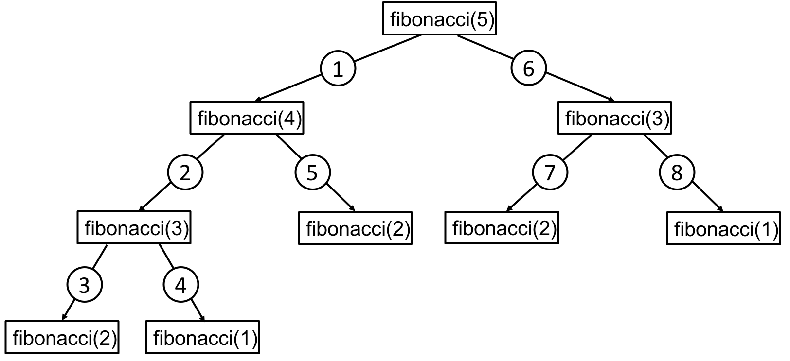

This notebook contains an excerpt from the Python Programming and Numerical Methods - A Guide for Engineers and Scientists, the content is also available at Berkeley Python Numerical Methods.
The copyright of the book belongs to Elsevier. We also have this interactive book online for a better learning experience. The code is released under the MIT license. If you find this content useful, please consider supporting the work on Elsevier or Amazon!
< CHAPTER 6. Recursion | Contents | 6.2 Divide and Conquer >
Recursive Functions¶
A recursive function is a function that makes calls to itself. It works like the loops we described before, but sometimes it the situation is better to use recursion than loops.
Every recursive function has two components: a base case and a recursive step. The base case is usually the smallest input and has an easily verifiable solution. This is also the mechanism that stops the function from calling itself forever. The recursive step is the set of all cases where a recursive call, or a function call to itself, is made.
As an example, we show how recursion can be used to define and compute the factorial of an integer number. The factorial of an integer \(n\) is \(1 \times 2 \times 3 \times ... \times (n - 1) \times n\). The recursive definition can be written:
\begin{equation} f(n) = \begin{cases} 1 &\text{if \(n=1\)}\ n \times f(n-1) & \text{otherwise}\ \end{cases} \end{equation}
The base case is \(n = 1\) which is trivial to compute: \(f(1) = 1\). In the recursive step, \(n\) is multiplied by the result of a recursive call to the factorial of \(n - 1\).
TRY IT! Write the factorial function using recursion. Use your function to compute the factorial of 3.
def factorial(n):
"""Computes and returns the factorial of n,
a positive integer.
"""
if n == 1: # Base cases!
return 1
else: # Recursive step
return n * factorial(n - 1) # Recursive call
factorial(3)
6
WHAT IS HAPPENING? First recall that when Python executes a function, it creates a workspace for the variables that are created in that function, and whenever a function calls another function, it will wait until that function returns an answer before continuing. In programming, this workspace is called stack. Similar to a stack of plates in our kitchen, elements in a stack are added or removed from the top of the stack to the bottom, in a “last in, first out” order. For example, in the np.sin(np.tan(x)), sin must wait for tan to return an answer before it can be evaluated. Even though a recursive function makes calls to itself, the same rules apply.
A call is made to
factorial(3), A new workspace is opened to computefactorial(3).Input argument value 3 is compared to 1. Since they are not equal, else statement is executed.
3*factorial(2)must be computed. A new workspace is opened to computefactorial(2).Input argument value 2 is compared to 1. Since they are not equal, else statement is executed.
2*factorial(1)must be computed. A new workspace is opened to computefactorial(1).Input argument value 1 is compared to 1. Since they are equal, if statement is executed.
The return variable is assigned the value 1.
factorial(1)terminates with output 1.2*factorial(1)can be resolved to \(2 \times 1 = 2\). Output is assigned the value 2.factorial(2)terminates with output 2.3*factorial(2)can be resolved to \(3 \times 2 = 6\). Output is assigned the value 6.factorial(3)terminates with output 6.
The order of recursive calls can be depicted by a recursion tree shown in the following figure for factorial(3). A recursion tree is a diagram of the function calls connected by numbered arrows to depict the order in which the calls were made.
")
Fibonacci numbers were originally developed to model the idealized population growth of rabbits. Since then, they have been found to be significant in any naturally occurring phenomena. The Fibonacci numbers can be generated using the following recursive formula. Note that the recursive step contains two recursive calls and that there are also two base cases (i.e., two cases that cause the recursion to stop).
\begin{equation} F(n) = \begin{cases} 1 &\text{if \(n=1\)}\ 1 &\text{if \(n=2\)}\ F(n-1) + F(n-2) & \text{otherwise}\ \end{cases} \end{equation}
TRY IT! Write a recursive function for computing the n-th Fibonacci number. Use your function to compute the first five Fibonacci numbers. Draw the associated recursion tree.
def fibonacci(n):
"""Computes and returns the Fibonacci of n,
a postive integer.
"""
if n == 1: # first base case
return 1
elif n == 2: # second base case
return 1
else: # Recursive step
return fibonacci(n-1) + fibonacci(n-2) # Recursive call
print(fibonacci(1))
print(fibonacci(2))
print(fibonacci(3))
print(fibonacci(4))
print(fibonacci(5))
1
1
2
3
5

As an exercise, consider the following modification to fibonacci, where the results of each recursive call are displayed to the screen.
EXAMPLE: Write a function fibonacci_display that based on the Modification of fibonacci. Can you determine the order in which the Fibonacci numbers will appear on the screen for fibonacci(5)?
def fibonacci_display(n):
"""Computes and returns the Fibonacci of n,
a postive integer.
"""
if n == 1: # first base case
out = 1
print(out)
return out
elif n == 2: # second base case
out = 1
print(out)
return out
else: # Recursive step
out = fibonacci_display(n-1)+fibonacci_display(n-2)
print(out)
return out # Recursive call
fibonacci_display(5)
1
1
2
1
3
1
1
2
5
5
Notice that the number of recursive calls becomes very large for even relatively small inputs for n. If you do not agree, try to draw the recursion tree for fibonacci(10). If you try your unmodified function for inputs around 35, you will notice significant computation times.
fibonacci(35)
9227465
There is an iterative method of computing the n-th Fibonacci number that requires only one workspace.
EXAMPLE: Iterative implementation for computing Fibonacci numbers.
import numpy as np
def iter_fib(n):
fib = np.ones(n)
for i in range(2, n):
fib[i] = fib[i - 1] + fib[i - 2]
return fib
TRY IT! Compute the 25-th Fibonacci number using iter_fib and fibonacci. And use the magic command timeit to measure the run time for each. Notice the large difference in running times.
%timeit iter_fib(25)
8.52 µs ± 141 ns per loop (mean ± std. dev. of 7 runs, 100000 loops each)
%timeit fibonacci(25)
16.5 ms ± 260 µs per loop (mean ± std. dev. of 7 runs, 100 loops each)
You can see in the previous example that the iterative version runs much faster than the recursive counterpart. In general, iterative functions are faster than recursive functions that perform the same task. So why use recursive functions at all? There are some solution methods that have a naturally recursive structure. In these cases it is usually very hard to write a counterpart using loops. The primary value of writing recursive functions is that they can usually be written much more compactly than iterative functions. The cost of the improved compactness is added running time.
The relationship between the input arguments and the running time is discussed in more detail later in the chapter on Complexity.
TIP! Try to write functions iteratively whenever it is convenient to do so. Your functions will run faster.
NOTE! When we are using recursive call as showing above, we need to make sure that it can reach the base case, otherwise, it results to infinite recursion. In Python, when we execute a recursive function on a large output that can not reach the base case, we will encounter a “maximum recursion depth exceeded error”. Try the following example, and see what do you get.
factorial(5000)
---------------------------------------------------------------------------
RecursionError Traceback (most recent call last)
<ipython-input-11-4d2572cc43ba> in <module>
----> 1 factorial(5000)
<ipython-input-1-d6624133408f> in factorial(n)
6 return 1
7 else: # Recursive step
----> 8 return n * factorial(n - 1) # Recursive call
... last 1 frames repeated, from the frame below ...
<ipython-input-1-d6624133408f> in factorial(n)
6 return 1
7 else: # Recursive step
----> 8 return n * factorial(n - 1) # Recursive call
RecursionError: maximum recursion depth exceeded in comparison
We can handle the recursion limit using the sys module in Python and set a higher limit. Run the following code, and you will not see the error.
import sys
sys.setrecursionlimit(10**5)
factorial(5000)
< CHAPTER 6. Recursion | Contents | 6.2 Divide and Conquer >